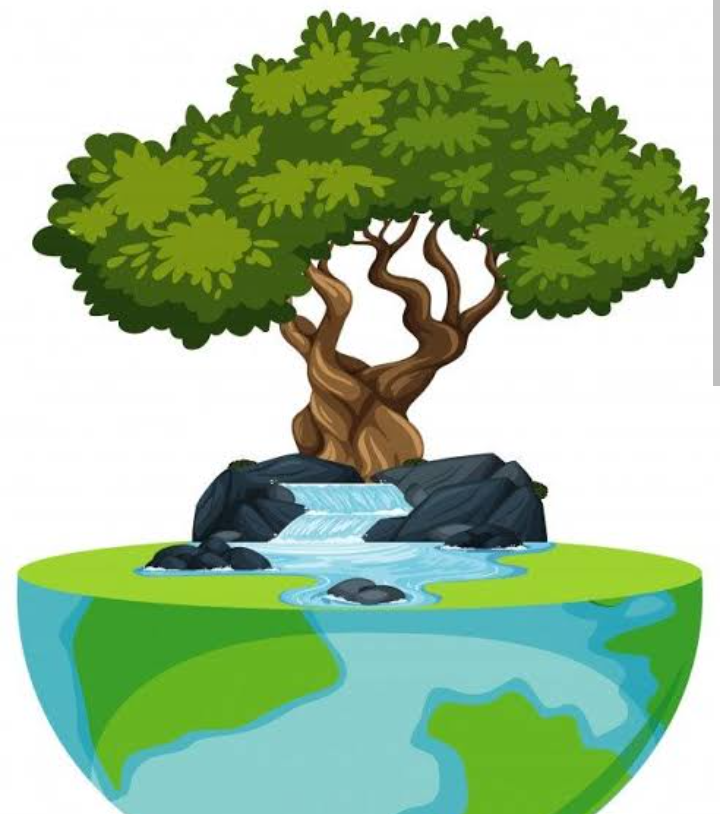

¿Cual es el proceso de reforestacion?
El proceso es muy importante importante en el tema de reforestacion para restaurar y conservar los ecosistemas forestales, apesar de presentar desafios y limitaciones durante el proceso.

PRIMER PASO
° "Planificacion":Es muy importante establecer un objetivo al proyecto de reforestacion para saber como actuar ante esta situacion, ademas de tomar medidas para restaurar un area degradada o mejorar la biodiversidad.
La evaluacion del sitio nos ayuda a determinar las condiciones climaticas,biologicas y de suelo para tener un estudio concreto de las especies de arboles a plantar.
PASO DOS
° "Preparacion del sitio":Para preparar el sitio donde se desea plantar es importante la limpieza del terreno para eliminar la malesa,escombros y otros obstaculos que nos impidan cumplir con nuestra meta.
Preparar el suelo para la plantacion,lo que pueda incluir la remocion de hierba, la aplicacion de fertilizantes y la mejora de la estructura del suelo.
PASO TRES
° "Plantacion":La seleccion y el estudio de las plantas que se desea poner en el sitio es indispensable para qeu su crecimiento sea él mas adecuado.
Regar y cuidar las plantas para asegurar su supervivencia y crecimiento.